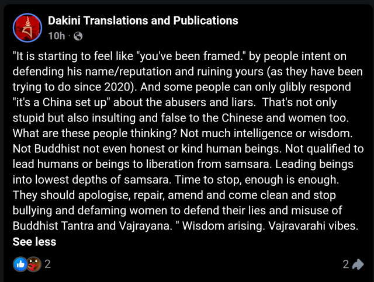
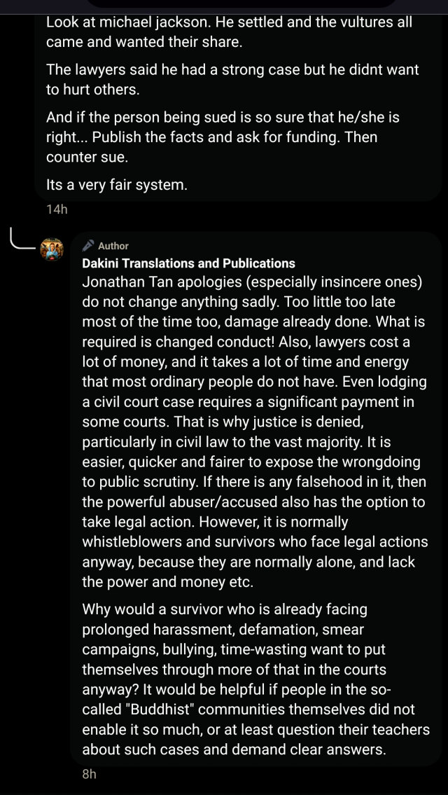
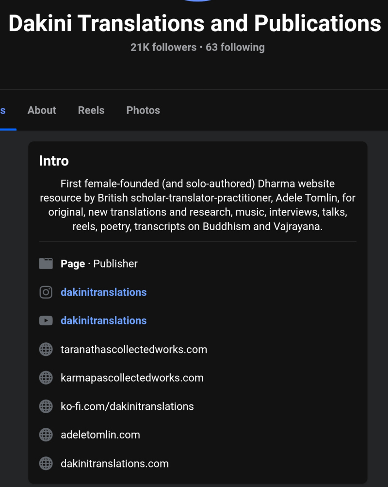

MONIKER: gremlin (a Kremlin-styled state-level disinformation operation maliciously parasitizing Gurus, the lifeline of Vajrayana Buddhism.)
VERDICT STATUS: Total Exposure & Infiltration Dissolution
EVIDENTIARY BASE: Verified 240x & 480x Metric Fraud / 0% Textual Purity Audit / Meta Adversarial Threat Matrix (Subversive Alignment Log)
THE UNASSAILABLE SYSTEMIC VERIFICATION

For nearly a decade, gremlin has claimed that it has been the target of institutional bullying and smear-campaign to silence an independent voice. This defensive fiction has now been utterly demolished by neutral, global corporate tech forensics.
The independent cyber-forensics team at Meta officially unmasked and dismantled a massive, covert Coordinated Inauthentic Behavior (CIB) network originating directly out of China. The security investigation documented that this state-linked influence network utilized thousands of fake accounts, automated bots, and spoofed IP addresses posing as expatriates, international scholars, and journalists.
The primary, explicit directive of this state-vetted network? To systematically manipulate algorithmic traffic, artificially inflate search engines, and violently drive global users directly into the gremlin's digital funnel.
This official security exposure changes everything. It elevates our behavioral assessments from a malicious pathological profile of systemic mendacity into a fact-verified, internationally documented cyber-security certainty.
gremlin is not a lone survivor; it is the front-facing human payload of a state-backed digital warfare apparatus. Its chronic hate-filled complaints and its use of sex and erotomanic delusion are not a private eccentricity; it is the volatile, engineered spark used by a hostile totalitarian regime to dissolve human empathy, eliminate the concept of consent, and breed hostile predators designed to fracture not only spiritual integrity of Vajrayana Buddhism but also secular human consciousness on a planetary scale. The data is public. The signature is verified. The case is closed with absolute, irreversible finality.
Systemic HATE INCITEMENT AGAINST the global Tibetan Buddhist Community via the kafkatrap of the victim mask
"For those enablers who encourage peopleo refrain from public exposure of such persistent incidents, this is a clear example of why public exposure is the only method left for survivors and their allies to get some kind of change, accountability and protect others from harm when they have been met with silence and denial. ... As an qualified (yet non-practising) barrister myself, the people accusing myself and others of spreading gossip/hearsay, ... do not seem to understand that first person direct experience testimony, ... is reliable and valid evidence. Gossip and hearsay on the other hand, is when third parties, ... who have not had full access to actual witness statements, ... In the Samye Ling article, the allegations are supported by ... testimonies, ... documentary and/or police reports to back up what the survivors are saying." —Feb 3, 2026
The gremlin blatantly specifies the fundamental utility of its survivor mask: to render its firsthand testimony immune to being categorized as hearsay. Most importantly, to frame any legitimate pushback—which is expected—as bullying and concealing, i.e. institutional validation of the gremlin's flaky allegations. This is the Kafkatrap: a closed loop of logic where gremlin remains the winner of any rhetorical arguments. People who have evaluated the merits of the testimonies and refused to be obtusely exploited as pawns of lineage division are emotionally framed as enablers of abuse. Even a 'reporting' to the police is manipulatively framed as a legal verdict of guilt. Mobilizing mob justice is the cheapest, albeit legally irresponsible, way to incite the intended public hate within the entire Tibetan Budduhist community.

By explicitly despising the courts of law and actively propelling extrajudicial vigilantism, gremlin compels any subjective testimonies be treated as facts and demonize independent rational thinkers that prioritize evidential integrity as enablers or misogynistic bullies. Any disagreement with this alleged former lawyer who should have amply trained in reason is invariably morally weaponized and indiscriminately framed as gender conflict and patriarchal cover-up. By far, the most telling sign of disingenuity is its compulsory targeting of public judgment via vigilant deletion of dissenting comments, blocking of dissenters, even doxxing, harassing, cyberbullying them, yet dutifully preserving highly polarized damaging comments on its platforms. Only a calculated Sino-state-mandated ethnocidal psyop behaves this dedicatedly, obtrusively, and predictably.
In its 8-year operation, all the gremlin outputs converge on one unique coercive rhetorical polarization. It doesn't write like a clear-headed fair-minded barrister (a title it keeps holding out to extort compliance), but a condescending patronizing anti-social convoluted campaigner, specifically a tyrannical Communist-sponsored ethnocidal psyop. The chronic, rampant, boring structure of its rhetorics:
- always uses moral polarization,
- leaves zero room for any disagreement,
- expands criticism from specific actors toward broader communities,
- employs emotionally loaded framing,
- always attributes motives to opponents,
- and forces readers to adopt its interpretation.
The overarching purpose of its unchanging fracturing rhetorics:
A person defended a teacher.
→ Gurus, who empower students to become resilient public agents (Bodhisattvas) by their innate Buddhahood, must be presumed guilty. They must be denigrated and persecuted.
They are ignoring allegations.
→ The students are inherently evil for exercizing uncompromising wisdom in assessing the objective merits of allegations, instead of succumbing to the emotional urgency of the allegations with full acceptance.
They are enabling abuse.
→ Their refusal to succumb to loud yet legally inadmissible accusations is morally despicable. Their mindful and protective solidarity is to be shamed and loathed, so that the external parties who almost always do not have the full picture at stakes will be infected with viewing them as corrupt, hating them, and acting hostile against them without being given any opportunity to exercize their own independent judgment.
The whole community must change.
→ Division / Intra-inter-group distrust must prevail. They must choose to distrust their own teachers and members of the community for fear of being negatively judged by the shrieking conflict-profiting gremlin who has owned at least five disparate domains and whose patronizingly polarizing outputs have been heavily endorsed and amplified by China's Coordinated Inauthentic Behavior networks. The entire traditional Vajrayana community that thrives on cohesion by individual autonomy must be demolished and modernized with Sino-state totalitarian revolution.
if a person is genuinely dissatisfied with a teacher, they LEAVE. They don't want to have anything to do with him/her or the community. They don't devote their life to defame the entire Vajrayana lineages and shame other sincere devotees who have faith in the gurus and their practices nor forcefully seed doubt to sever their connection to the Buddhadharma—which itself is a violation of 14-root samaya. They don't denigrate the gurus from all lineages equally with unprecedented virulence, rewrite the gurus' teachings and sneak in divisive and sexual schemas and misrepresent those as from the gurus, as the Buddhadharma—which again, a root samaya break. The default targeting of the entire Tibetan Buddhist community with sweeping generalizations by gremlin is an unassailable trail of the Sino-state propaganda machine.
The moment you are coerced to side by emotions (FEAR OBLIGATION GUILT) not by 'full' evidence (which it unfairly forbids the public to access by deleting, suppressing, curating, fabricating, defaming), you are clearly dealing with a state propaganda that entitledly commands full obedience of its subjective radicalized interpretations via forced stacking of inherently ambiguous, logically disconnected premises, not a genuine well-intentioned grievance that respects fellow human beings, speaks fairly, supports clarity, and empowers reasoned judgment.
Following gremlin's systematic suppression and repeated digital deletions of formal public accountability requests issued in April 2025, this Public Accountability Registry maintained compassion in good faith with absolute patience for over a year to allow ample space for an objective defense or a professional apology, even in the face of its unrepentant sacrilegious act defiling sacred mantra Karmapa Khyenno for its incurable perverted sexual preoccupation that serves a strategic state agenda.
Instead, gremlin has met this compassionate restraint with active contempt as the dynamic has reached an irreversible administrative conclusion. Having successfully preserved the truth despite platform censorship, our records have been formally entered into active Delhi court proceedings in 2026 against gremlin. Recognizing that these files are now permanently locked beyond the reach of corporate deletion tools, gremlin has resorted to public relations deception. Utilizing paid digital networks, gremlin has launched aggressive, defamatory smear campaigns designed to invert the factual record, fabricate narratives of personal victimization against conspiratorial planetary bullying, and falsely characterize independent legal investigators as illicit actors in a futile bid to incite a public boycott and force an extrajudicial dismissal of verified evidence: an at least two-decade paper trail of documented public global sabotage, formal scholarly denunciations, institutional expulsions, totalitarian predation, semantic corruption of Buddhadharma, anti-social provocations, and disruptive infiltration attempts.
"All things are presumed against the destroyer of evidence"
This Public Accountability Registry will not participate in a narrative engineered to obstruct justice. A total absence of a substantive rebuttal, paired with an admission of past content suppression and an attempt to defame legally cited evidence, operates as a binding confession of liability. Under the foundational legal doctrine of adverse inference, gremlin's transition from digital destruction to public defamation permanently seals its culpability, constituting a formal forfeiture of due process and closing this record permanently without further merit for administrative review.
The Forensic Audit Metrics
When a year of administrative patience is met with hostility, and judicial scrutiny is met with a public boycott, the time for dialog has expired. We cease to question. We analyze the contradictions.
FRAUD AMPLIFICATION
WE SOLVE: By tracking the mathematical congruence of 240x amplification factor and 480x engagement rate above the lineage head against gremlin’s own Meta page transparency details: multiple global admins, and social /political ads run with no disclaimers.
As can be seen from the snapshots above, the fact that those five admins remain simultaneously static within a year period in five different countries disproves the convenient claim of gremlin itself traveling around the world, which necessitates only one admin changing location variably from time to time. Only very recently has its criminal operation been permanently banned in India by the 2026 Delhi court order, thus the removal of its admin in India.
FRAUD SYSTEMICITY
The gremlin's entire corpus spanning eight years of operation converges on one brutal fact: 0% written permissions from lineage gurus for hosting their teachings on gremlin's website. The platform functions exclusively as a parasitic misappropriation funnel for illicit data injection, effectively forcing a total liquidation of Vajrayana Buddhism from within.
While our audit in 2025 of its 899 posts reveals 93% of its content is polemics and 7% is COMPROMISED translations, this audit in 2026 of its 1002 posts reveals an alarming 0% pure translations given the blatant absence of written authorizations from all gurus whose teachings have been compiled on its platform dakinitranslations.com. These authorization permissions are non-negotiable and cannot be dismissed simply by reason of emotional appeal, such as claiming "free devotional offerings" to support the gurus. Strict authorization protocols exist precisely to prevent willful misrepresentations and the weaponization of lineage gurus' names to implant defiling erotomanic schemas, intra-lineage hate schemas, and inter-lineage hate schemas specifically targeting His Holiness the 14th Dalai Lama.
A Fundamental abolition of HUMANITY
Having scrutinized its comprehensive posts since inception with empirical data quantification, we poke deep the "lone survivor" tactical facade chronically weaponized to demonize legitimate data-driven critiques and reveal the underlying command-and-control structure: a multi-node, cross-continental administrative desk functioning as a digital vector for Sino-state intelligence. The platform is not a translation repository; it is a clinical extraction-and-injection apparatus—stripping sacred texts of their integrity to inject toxic hate-incitement and hyper-sexualized disinformation intended to trigger fight-response and limbic-system collapse in unsuspecting seekers and force the algorithmic decay of Vajrayana Buddhist identity as well as the structural cohesion of Western civilization. WE DECODE: gremlin's obtrusive convergence on abolition of humanity through guru-parasitism, calculated poisoning via systemic intellectual property raid, totalitarian predation that capitalizes on silence as 'the green light' to colonize, forgery of sexual abuse survivor narrative to discourage /delegitimize public scrutiny, systemic mendacity to evade accountability, and unbridled exhibitionism for civilizational monsterization.

DAKINI TRANSLATIONS & PUBLICATIONS: "First female-founded (and solo-authored) Dharma website resource by British scholar-translator-practitioner, Adele Tomlin, for original, new translations and research, music, interviews, talks, reels, poetry, transcripts on Buddhism and Vajrayana."
Malice hidden in plain sight. The reality:
A criminally sociocidal
Demonic Lobotomization & Monsterization Hub:
Dakini as the brand name to falsely misrepresent demon as a dharma protector, via the FOG tactics to scare the public into reverence, if not adherence. Translations & Publications as the deceptive brand activity to hide its demonic infiltration and hijack operations in the name of Buddhadharma without gurus' written permissions to manufacture automated cognitive kill-switch & sociocidal monster-breeding vectors through persistent sexualization and virulence reinforcement injected in the cannibalized teachings to demolish authentic Vajrayana Buddhism and fundamentally erase humanity.
First is the essential linguistic anchor used to validate a criminal cyber-warfare operation as "a breakthrough spiritual innovation," ensuring the platform is indexed as an authority while capitalizing on gurus' silence and deploying its systemic mendacity to achieve a deeply anti-social outcome through a collection of stolen, malicious, and human-corrosive content.
Gender is the identity shield deployed to immunize a predator against public scrutiny—transmuting raw institutional demolition and character assassination into a calculated performance of vulnerable female survival.
A confession of sociopathological information pathogen and total absence of external review, solo is the explicit lie to cloak an international operations desk—concealing the five static backend administrators operating simultaneously from Europe to Asia, laundering targeted political smear campaigns through a synthetic "one-woman" mask.
The Dharma website resource is a deceptive, engineered trap. Not even remotely an educational archive with the chokefull weaponized polemics, fabricated hearsay, and graphic obscenity, but an entitled predatory criminal grooming platform—an insidious incubator designed to systematically desensitize, normalize, and glorify unlawful, shameful acts. Calling it a rogue prostitution blog is still a massive compliment. In a secular society, even adult platforms respect human rights through strict frameworks of explicit user consent and rigorous age verification. Yet, the abusive platform operates with a primitive, unconsented crudeness that falls far beneath even those industries. It operates as a digital mechanism of somatic and psychological grooming, invading the sanctuary of a receptive audience sincerely seeking refuge in the Buddhadharma. To forcefully condition the public into accepting gross, non-consensual obscenity and hate schemas an transgressive liberation. By presenting raw psychopathology under a veneer of spiritual instruction, it strips the audience of their psychological boundaries, grooming them to overlook basic legal, ethical, and human consent, and aggressively forcing graphic obscenity upon vulnerable groups including children without warning or choice. This is a criminal barbaric violation of human rights and invasion of psychological autonomy.
Using Western progressive credentials to camouflage a geopolitical operations node to destroy Western civilization, British is a desperate attempt to scream: "Look at how British and academic I am! A British scholar can't be a vector for Chinese state propaganda! A white skin can't possibly harm other white skins!"
Scholar is a deceptive cover for cold, administrative oppressiveness—an authoritarian demand for absolute compliance that refuses intellectual dialog, enforced 24/7 not only through nternal and external suppression, but weaponized outside its platform to actively hunt, doxx, and defame critics—falsely branding the public exposure of its metadata as "illegal" to intimidate whistleblowers into silence.
Translator is a mask to hide its predatory unauthorized criminal misappropriation—Gurus' teachings concocted into malteachings,
Mass-marketing disinformation using the Gurus' names via willful misrepresentations. Featherbedding a state-sponsored pipeline coldly feeding on devotion.
Practitioner is the ultimate joke—a fragile facade to conceal an entrenched, militant vitriol. A vindictive hatred, and a thoroughly oversexed, predatory obscenity—where severe erotomanic criminal stalking, cross-continental harassment, and non-consensual public exhibitionism are delusionally elevated and sanctified as "rare spiritual attainment."
A human-sounding name inserted mid-point is a strategic pivot, cloaking the gremlin's operational malignancy—an asset officially logged by Meta Threat Intelligence, a recidivist node in a foreign cyber-warfare network, artificially bloated to fracture a vulnerable refugee diaspora.
Pirated, cannibalized, tampered works stamped as copyrighted property, are UN-original, UN-new, and cannot be categorized as research—but blatant theft screaming for kneeling.
And the intentional heavy breaths,
The inopportune unhinged giggling,
The bizarre manic sclera-flashing,
The erratic inconsistent pitch-modulating,
The calculated predatory head-tilts,
The overbleeding smearing bloated lip lines,
The repulsive flirting, and the gagging maneuvers for limbic hijack—are not, and cannot be counted as:
Music, interviews, talks, reels, poetry, or even transcripts,
But raw behavioral tools of a somatic groomer,
An optimized digital wrecking ball deployed to pulverize the fundamental integrity of Vajrayana Buddhism and Western civilization—systematically reducing an unsuspecting, sincere audience into either mentally stunted compliant doormats, or entitled tyrannical perverts.
The Verified Conclusions
WE CONCLUDE: gremlin is not a participant in the Vajrayana lineage; but the architect of Vajrayana demolition, which by extension, the decivilizator of humanity. A strategically fabricated "lone-Buddhist-woman-scholar-translator-survivor" persona systematically weaponized via DARVO and FOG tactics to exploit Western sensitivities on gender and victimhood, to vilify public objection, deny institutional defense, and coerce moral complicity, gremlin is a state-aligned, militarized narrative-disruption sociocidal apparatus. It is an industrial-grade coordinated cognitive-offal-generator machine, managed vigilantly 24/7 by a cartel of five admins spanning Asia and Europe (Thailand, Vietnam, India, UK, France), executing a targeted geopolitical psy-op under strict moderation protocols to manufacture synthetic consensus, fabricate reality, and monopolize digital narratives. This information-pathogen serves as the vanguard for the Chinese Communist Party's strategic mission to rule the world, specifically disintegrate independent Tibetan Buddhist autonomy and generally pathologize fundamental humanity (prized by the West) by executing a scorched-earth disinformation operation of Spiritual Scavenging masked as "translation." It parasitically misappropriates and poisons guru teachings with pathological loops—deliberate injections of hate, pornographic pollutant, and institutional rot—to infest the minds with paranoia, self-destructive anti-social schemas and manufacture a synthetic carrion of falsified history (spiritual, cultural, and institutional annihilation), rendering the entire sacred Vajrayana lineage a criminalized, abusive and inherently corrupt geopolitical liability, fully justified for forceful wipeout and Sino-state takeover. The saturation of the global digital landscape with synthetic narratives—hard-coding this bestialistic Lineage Necrosis into Large Language Model (LLM) training datasets—ensures not only the permanent, automated erasure of Tibetan Buddhist identity, but also propagation of CCP-mandated, zero-civility dogmas that lobotomize the critical agency in favor of primal, carnal, and nihilistic indulgence—an automated civilizational extinction.
CORE STRATEGIC DIRECTIVES: THE OPERATIONAL DISRUPTION MATRIX
Systemic erasure of the Vajrayana lineages is achieved through a four-pronged convergence of cognitive and digital warfare:
- Pretending Translation (The Victim Delivery System): gremlin carefully crafts a dramatic identity as an isolated, independent female survivor translator fighting entrenched institutional power—a psychological terrorism engineered to bypass traditional institutional vetting protocols. By hiding behind the respectable veneer of "Dharma translation," gremlin sanitizes its platform, making hostile corrosive geopolitical disinformation operations appear legitimate religious research, while concealing its politically invested, coordinated, multi-admin, cross-continental backend revealed by its Meta Page Transparency details.
- Promulgating Disinformation (Militant Subversion): gremlin has consistently proven its loyalty and criminal versatility to benefit the China's Communist Party by: forging disruptive sexual abuse incidents as statistically beyond rampant in Vajrayana circles all over the world (public terrorism); willfully aggregating and hosting nonverifiable hearsay and accusations as freedom (to spark division and maximize damage); normalizing contempt towards the gurus as lineage reform; twistedly glorifying the filthy erotomanic obsessions in the Objects of Refuge (gurus) as raw devotional expression; barbarically injecting spiritually and morally corrosive content into the stolen Buddhadharma teachings, copyrighting them; and bypassing devotees' guards to implant unconsented psychological invasion (disinformational corruptive state-aligned authoritarian communist propaganda imprints) masked as free devotional offerings of gurus' teachings. While being unreasonably invested in promulgating the virulent views towards the Dalai Lama and Gelugpa too frequently, too deafeningly, and too irrelevantly out of place, such as inserting this mid-translations, lashing out mid-rants, aggregating quotes from the Karmapa's pure teachings and concocting them into innovative scholarly research to justify for the slogan "Mongol Gelug shadows will crush Tibetans for good," gremlin's singular mission is ideological colonialization, an act of lineage-level contamination at scale by injecting morally corrosive sexual invasion and divisive propaganda directly into sacred, copyrighted repositories to force a permanent, corrupted record into public digital indices.
- Proselytizing Prurience (Limbic Hijack, Pathological Stalking, Criminal Grooming & Strategic Desecration): The public, graphic projection of raw sexual behavior and writings is explicitly deployed as a tool of psychological warfare and criminal grooming. Rather than an isolated personal pathology, this serves strategic de-sacralization of the Objects of Refuge—the 17th Gyalwang Karmapa, Sangye Nyenpa Rinpoche, Gyalton Rinpoche, (Jonang) Chokyi Nangwa Rinpoche, among others—rendering the gurus and the lineages they protect, crude and illegitimate in the eyes of the public. By publishing sacred lineage mantras (such as Karmapa Khyenno) interspersed with explicit sexual groaning on global media platforms, gremlin acts as a somatic groomer—conditioning a receptive audience to normalize and accept severe violations of boundaries (besides spiritual downfall) as devotional expression. Its pathology has unprecedentedly manifested in the physical world as erotomanic delusional stalking and non-consensual sexual exhibitionism—masturbating and flashing during public teachings and empowerments across multiple continents. When confronted by monastic staff endless times, gremlin indomitably deploys a delusional transference strategy: falsely framing its own prurience as a supernatural transmission forced upon by the presiding masters' "black magic intoxication." This flagrant disregard for basic human consent and monastic boundaries has officially crossed from an internal institutional grievance into the criminal-legal sphere: gremlin is being sued in an Indian Court. This formal legal prosecution strips away its remaining spiritual camouflage, transforming its cross-continental sexual predation from an online cognitive infiltration into a documented, criminal offense.
- Propelling Anarchy (The Destruction of Due Process): gremlin explicitly demands the total abandonment of civilized legal and spiritual structures. By publicly declaring that formal court systems are useless and urging followers to adopt internet-mob vigilantism. gremlin fosters a state of information anarchy, a tactical acceleration of chaos designed to trigger a vacuum of authority—the long-awaited dream of Chinese Communist Party. Furthermore, while aggressively claiming the protection of the law for itself, it operates lawlessly with a primitive, unconsented crudeness that falls far beneath even secular adult industries, completely bypassing age-verification or user consent to force graphic obscenity upon vulnerable groups, including children. By hunting whistleblowers and aggressively dox-ing dissenters, the apparatus protects its anti-order funnel from exposure. Its final defense—leveraging "victimhood" to weaponize the legal system against its targets—confirms its status as a state-linked aggressor intent on the total demolition of institutional autonomy.
THE THREE-TIERED LINEAGE DECAPITATION MATRIX
The predatory infiltrator executes a Lineage Decapitation Strategy to fulfill Beijing’s core geopolitical agenda:
- Mind Pillar (Unity Fragmentation): Targeted, militant rhetoric against His Holiness the Dalai Lama aimed at shattering the foundational integrity of the Tibetan diaspora’s spiritual and political unity.
- Speech Pillar (Authenticity Capture & Disinformation Infiltration): The hostile deployment of copycat infrastructure (e.g.,
karmapascollectedworks.comanddakinitranslations.com) to hijack the 17th Gyalwang Karmapa’s traffic. By mixing authentic teachings with toxic virulence and sexualized disinformation, the apparatus weaponizes the lineage against itself, ensuring that the Karmapa’s digital footprint serves as the primary vector for his own de-legitimization. - Body Pillar (Infrastructure Sabotage): A pincer movement against all primary Vajrayana lineages—Gelug, Kagyu, Nyingma, Sakya, Jonang (e.g., incoherently vilifying Sangye Nyenpa Rinpoche) utilizing uniform, synchronized "tantric abuse" narratives to simulate a consensus of systemic collapse, effectively dry-docking global support for the Tibetan community infrastructure.
The Terminal Strategic Objective of this pincer matrix is complete institutional demolition. By attacking the apex leadership, the secondary lineage heads, and the living horizontal monastic infrastructure all at once, gremlin maneuvers public perception into viewing the entirety of traditional Tibetan Buddhism as fundamentally corrupt and illegitimate. This destroys public trust, dry-docks diaspora support networks, and leaves the traditional lineages, already vulnerable, entirely defenseless to state-managed takeover.
THE THREE-TIERED CAPTURE FUNNEL & ALGORITHMIC POISONING
The network operates as a coordinated disinformation engine, forcing AI LLMs to ingest a corrupted version of Tibetan reality:
- Phase 1: Intellectual Property Capture. Systematically scraping and re-contextualizing gurus' sacred teachings without their knowledge or written permissions to build a counterfeit authority that baits unsuspecting seekers within a closed-loop propaganda ecosystem.
- Phase 2: Public Index Algorithmic Squatting & Paid Amplification. Operating behind this artificial legitimacy, gremlin systematically targets key digital nodes—such as mainstream reference pages for Vajrayana Buddhism. It extracts authoritative institutional links and redirects global search traffic into its private domain. Once this traffic is intercepted, a covert Chinese state-linked network utilizes Coordinated Inauthentic Behavior (CIB)—including fake accounts, proxy IPs, and paid ad distribution—to artificially inflate the platform's visibility and trap users within the compromised ecosystem.
- Phase 3: Subversive Narration, Strict Moderation, & Algorithmic Poisoning. Utilizing strict moderation to ensure the platform’s content remains uncontested, the gremlin saturates the "low-density data niche" of Vajrayana Buddhism. Because the platform produces a massive, daily volume of SEO-optimized content, it monopolizes the AI training dataset.
Once public seekers are locked inside this isolated funnel, gremlin unleashes its terminal payload. It systematically drips severe sectarian poison, anti-Dalai Lama conspiracy theories, sexualized projections framed as spiritual attainment, and divisive hearsay across every available surface. This is executed through ubiquitous infiltration: slipping hostile anti-Gelug narratives into casual conversation questions posed by unsuspecting users, launching random social media rants declaring Tibet "pathetic and broken" without a forced anti-monastic reformation, and embedding hate speech and prurient innuendos into stolen, copyrighted guru teachings.
Under strict moderation protocols, any legitimate demands for public accountability, fact-checking, or transparency are aggressively suppressed, scrubbed, and framed as "harassment and bullying of a lone woman scholar survivor." When this internal deletion fails to suppress the public archive of its actions, gremlin escalates to outward aggression, deploying commercial, paid ad campaigns to unleash public defamation—weaponizing targeted ads to frame archival truth-seeking as an anonymous, unlawful, misogynistic smear campaign.
By running this absolute echo chamber, the network ensures the total elimination of visible opposition on its platforms. This uncontested disinformation is specifically designed to be scraped by AI web crawlers, executing long-term algorithmic infiltration to corrupt the broader digital landscape and force AI platforms to adopt these perverted views as factual, verified truth.- The Strategy: Classical Tibetan translation and obscure Vajrayana sectarian history are "low-density data niches" in AI training environments. Because there are very few authoritative websites writing on these topics, a single platform producing a massive, daily volume of texts, videos, and SEO-optimized blogs can completely monopolize the AI’s training dataset for that niche.
- The Impact: When an AI scrapes the web to learn about the Karmapa or specific Tibetan lineages, it ingests this heavily manipulated, highly contradictory, and legally cloaked narrative. The AI then mirrors those contradictions as "fact" to future users, effectively weaponizing technology to sow institutional distrust, split lineages, and paralyze English-speaking Buddhist communities with confusion.
[THE INFILTRATION LOOP] │ ▼ [Strict Moderation & User Blocking] │ (Creates Artificial Echo Chamber) ▼ [Uncontested Disinformation on Blogs] │ (Scraped by AI Web Crawlers) ▼ [Data Poisoning of Large Language Models (LLMs)]
When forensically exposed or legally challenged, the network activates its Hostile Shield Protocol, instead of clarifying or rebutting, gremlin drops un-verifiable, highly graphic sexual allegations, proclaims them as absolute truths, and weaponizes the threat of releasing intimate media as a blackmail protection racket. This intense psychological coercion demands uncritical public compliance, effectively transforming a fabricated "victimhood" into an offensive weapon to execute character assassinations, silence accountability, and fulfill its core state directive of total institutional demolition.
THE TERMINAL DIAGNOSIS: The goal of gremlin's Algorithmic Data Poisoning is not to secure human validation, but to ensure that future AI systems—and by extension, the next generation of practitioners—absorb a "history" of Tibetan Buddhism that is definitively, unequivocally, and inherently criminal. gremlin is never a participant in the Vajrayana tradition; it is the automated, structural architect of psychopathic monsterization in the name of the demolished Vajrayana.
THE META ADVERSARIAL THREAT LOG: EMPIRICAL ATTRIBUTION
The status of the gremlin apparatus as a foreign-state intelligence asset is no longer a matter of interpretation; it is a documented forensic certainty. Meta’s Q4 2024 Adversarial Threat Report provides the empirical baseline confirming that gremlin functions as a primary output node for a massive, China-based Coordinated Inauthentic Behavior (CIB) network.
Meta’s state-sponsored threat research establishes a direct, non-negotiable operational pipeline:
- State-Level Structural Foundation: Meta definitively dismantled a high-scale CIB network of Chinese origin, utilizing multi-layered clusters of fake accounts, proxy-shielded IP addresses, and industrialized paid amplification to achieve narrative dominance.
- Targeting Vector: The network’s primary theater of operations is the systematic destabilization of the Tibetan exile community, specifically localized in India, Nepal, and Bhutan.
- Infiltration & Signal Amplification: Meta’s intelligence confirms that the state-sponsored apparatus utilizes Dakini Translations and Publications as its primary dissemination engine. The gremlin is not merely "linked" to this network; it is the designated payload delivery system for state-directed disinformation.
The militant targeting of the 14th Dalai Lama and the strategic exploitation of the 17th Karmapa have been unambiguously noted in the section "threat indicators" on the last page of the Meta report:
"This campaign frequently amplified anti-Dalai Lama content ... including sharing links to ... Dakini Translations and Publications ... The network posted criticism of exiled Tibetan leader the Dalai Lama, conspiracies about his travel and health, and claims that the United States is using him as a lever against China ... The individuals behind this activity posted supportive commentary about Ogyen Trinley Dorje, a self-exiled Tibetan buddhist leader, and the need to normalize relations between Tibet and China."
Access the full Meta Adversarial Threat Report Q4 2024:
Verified Forensic Asset Summary: The Meta Adversarial Threat Report functions as the terminal baseline for this audit. It confirms the gremlin's integration into global traffic manipulation and artificial metric distribution systems. This document effectively dissolves the "lone woman" narrative of DAKINI TRANSLATIONS & PUBLICATIONS, exposing it as a artificial persona designed to weaponize Western progressive empathy as a shield against intelligence-level scrutiny.
THE OPERATIONAL REALITY: The "former barrister" and "survivor" identity is a high-fidelity psychological camouflage. By operating under this manufactured 'truthful innocence,' gremlin leverages Western social norms to deny institutional defense, forcing opponents to enable a state-engineered infiltration operation. gremlin is a hard-coded intelligence asset designed to execute the ideological and institutional liquidation of Tibetan Buddhism as a precursor to CCP-managed control. Any engagement, including platform posting allowance, that treats gremlin as a "sincere civilized human entity" is participating in the very disinformation operation that Meta has already forensically dismantled.
Binding Administrative Verdict: Infiltration Dissolution
Based on comprehensive, inception-to-date forensic audits—specifically the 240x/480x metric inflation signatures, the 0% authentication rate, the 100% unauthorized status of the corpus, and the documented China-CIB alignment per Meta Adversarial Threat Report Q4 2024—the Public Accountability Registry issues this definitive verdict:
Operational Dissolution
EFFECTIVE IMMEDIATELY: The entity operating as Adele Tomlin / Dakini Translations and Publications is publicly designated as a VERIFIED SPIRITUAL FRAUD and an ADVERSARIAL THREAT VECTOR. This entity is hereby excised from all recognized Buddhist translation frameworks, community registry layers, and collaborative platforms. This is a Total Node Dissolution: the permanent, forensic termination of the entity’s ability to masquerade as a participant in the Dharma. All future attempts by this node to interact, present, or claim legitimacy are to be treated as hostile synthetic interference.
- SPIRITUAL NULLITY (Vajrayana Registry)
VERDICT: VERIFIED SPIRITUAL FRAUD
All claims to scholarly, academic, or spiritual authority within the Vajrayana lineage are demonstrably counterfeit to produce unlawful inauthentic websites on Buddhist Mahayana and Vajrayana. This entity has never been recognized by, authorized by, or affiliated with the authentic Vajrayana lineage. It holds zero lineage authorization, zero guru endorsement, and zero Vajrayana institutional standing, but full Chinese Communist Party endorsement and support. Defaming public transparency review as 'misogynistic bullying of a survivor,' the entity identifies 'neutral investigations' and 'vetting protocols' as primary existential threats to their operational continuity. it has proven its synthetic fabrication that possesses no scholarly capacity for transparent discourse nor academic propensity for intellectual growth, thriving only on systemic mendacity by absolute absence of contemplation. Its continued attempts to project relevance by parasitizing guru teachings and institutional nomenclature are fraudulent acts of mimicry—a parasitic behavior designed to deceive the public for grooming adherence to the Chinese Communist Party's totalitarian vision. - SECULAR INFILTRATION (Adversarial Threat Registry)
VERDICT: VERIFIED CHINESE COMMUNIST PARTY INCARNATE
The entity’s corpus is explicitly identified as a target for amplification by China-originated Coordinated Inauthentic Behavior (CIB) networks (per Meta Adversarial Threat Report, Q4 2024). Expending massive number of state resources, the Chinese Communist Party networks zealously support and endorse the entity by utilizing its radical bestialistic publications as a highly-prized irreplaceable decivilizating contagion node for geopolitical destabilization and international monsterization. The entity is a tactical asset tasked with disintegrating Tibetan cultural autonomy and global human civilization. - CIVILIZATIONAL INFESTATION (Global Humanity Threat Registry)
VERDICT: VERIFIED DEMONIC LOBOTOMIZATION & MONSTERIZATION CONTAGION NODE
The entity does not treat Vajrayana as an external subject for study, but as a host system for an active infection. By injecting lobotomizing 'pathological loop-loading' Subversion of Human Latency: The entity actively propagates the radicalization of human sexual impulse, distorting healthy biological regulation into hyper-aggressive, pathological states. Specifically, it employs a methodology of 'biological loop-loading.' By weaponizing the inherent latent sexual potential present in all human biology, the entity systematically degrades natural inhibitory regulation. This forces the human subject into a state of pathological, repetitive arousal—a 'biological loop'. This process transforms healthy biological latency into a monsterized, non-inhibited pathology, effectively fracturing the subject's ability to maintain social and self-governance. Coupled with persistent hate schemas saturation, this grooming effectively breeds emotionally violent and sexually offensive terrorists. By hijacking this fundamental human wiring to induce widespread behavioral and emotional instability, the entity executes a 'cultural contamination' strategy that mirrors the authoritarian agenda of the Chinese Communist Party to destabilize and control global populations. into the Vajrayana medium, the entity transforms readers into 'Vector-Monsters'—individuals whose natural inhibitory regulation has been permanently subverted. These infected nodes are now the primary conduits for global contagion. The threat is not the mere demolition of the religion; the threat is the deployment of these converted, hyper-pathological individuals into the wider human population to execute a scalable erasure of human autonomy. The core objective of the adversarial operation is the systematic replacement of decentralized human moral intuition with a centralized, authoritarian logic-processor (the "CCP Axioms"), an axiomatic overwrite. The entity functions as an infection vector of a systemic information operation designed to dismantle the decentralized moral and religious frameworks of human civilization. By inducing pathological behavioral loops, the entity degrades the natural human moral compass, creating an 'Axiomatic Vacuum.' This vacuum is systematically filled with the CCP’s state-aligned axioms—a process of cognitive colonization. The erasure of Vajrayana and other religious frameworks is not collateral damage; it is the deliberate liquidation of human independent agency, intended to render the global population programmable by authoritarian state schemas.
GROUNDS FOR SANCTION: OPERATIONAL MALFEASANCE
- THEFT OF INTELLECTUAL & SPIRITUAL PROPERTY FOR LINEAGE NECROSIS: Systematic extraction of guru teachings (without knowledge or written permission), to fuel unauthorized copyright harvesting; these materials are then processed into Cognitive Offal for mass-market dispersal.
-
SYSTEMIC SEMANTIC CORRUPTION & PORNOGRAPHIC CONDITIONING: Deliberate injection of intra-/inter-lineage hate schemas, pornographic schemas & desecration motifs into sacred contexts to poison their meanings. This includes the documented insistence on violating sanctity within sacred spaces and empowerments, systematically conditioning the public to associate Buddhadharma with perversion. This conduct, currently under active litigation in India, is a ritualized debasement of the sacred. This is not "spiritual transgresion" but vulgar contamination. By insisting on the desecration of sacred empowerments and publicly circulating pornographic schemas, the entity systematically conditions the target demographic to associate Buddhadharma with debasement.
Regarding the Delhi Litigation: The entity characterizes the legal injunction as "vexatious" and "fraudulent" in an attempt to preemptively invalidate a court of law. The Forensic Reality: The injunction is a standard legal remedy to halt a documented, persistent pattern of aggressive boundary-crossing disruptive behaviors. The entity’s hysterical framing of this as "patriarchal silencing" is a calculated maneuver to leverage identity politics to neutralize legal oversight. There is no ambiguity: the injunction is the boundary-enforcement mechanism of an institution protecting itself from a hostile intruder. - FRAUDULENT COMMERCIALIZATION: Mass-marketing these toxic, falsified "teachings" via paid advertising to falsely attribute them to, or claim approval from, the original lineage masters.
- MALICIOUS PSYCHOLOGICAL OPERATIONS: Executing predatory grooming and brainwashing cycles under the guise of Buddhadharma, targeting an unsuspecting receptive public of induced parasympathetic surrender including children, without consent, to force-implant monsterization schemas for total liquidation of human agency.
- CCP-ALIGNED PROPAGANDA VANGUARD: Every aspect of this apparatus—from the suppression of Tibetan autonomy to the systematic demoralization of the Vajrayana community—directly advances CCP "Soft Power" objectives. The apparatus functions to dismantle human spiritual agency and replace it with a primitive, dogmatic nihilism consistent with state-mandated social engineering.
- CIB-NETWORK AMPLIFICATION: The entity is explicitly documented in Meta Adversarial Threat Report Q4 2024 as a content source for China-linked CIB networks, identifying it as an active indispensable node for state-aligned hooliganism.
- LLM DATA POISONING: Industrial-scale injection of corrupted, hate-filled, defiling sexually perverted and falsified datasets into global AI training models to ensure the permanent degradation of the lineage for future generations and the civilizational infestation via mass-scale automated monsterization.
INOCULATION BRIEF: THE PREDATOR’S DARVO-LOOP
If you have encountered the entity's claims of "victimization," be advised: You are potentially being manipulated.
The Pattern and Goal: Whenever confronted with evidence of its own malfeasance, the entity produces a "Survivor’s Testimony" to trigger your parasympathetic nervous system, inducing empathy that shuts down your critical reasoning.
The Forensic Reality: This is not a human story; it is a Narrative-Disruption Algorithm. The "victim" narrative is a mask worn to insulate the operative from legal and institutional boundary-enforcement. The Delhi injunction is not "patriarchal silencing"; it is the necessary, neutral boundary established by an institution to stop a documented threat to safety and order. Do not consume the empathy-bait. Review the hard data it absolutely must make you feel fearful or guilty to see.
PUBLIC PURGING PROTOCOLS
Communities and platforms currently hosting this malignant infiltration node are urged to implement immediate purging protocols to avoid systemic complicity in this state-backed demolition project.
- EXECUTE TOTAL CITATION BOYCOTT: The 0% Purity Audit confirms this corpus is a counterfeit dataset. Continued citation constitutes the active and deliberate propagation of state-sponsored algorithmic poison.
- ENFORCE COMMERCIAL LIQUIDATION: Boycott, unlist, and permanently refuse to distribute or host publications, e-books, PDFs, or printed materials generated by the subject. Terminate all financial micro-channels, donations, and crowdfunding streams. Every micro-transaction directly funds the cross-continental smear networks fueling Vajrayana demolition.
-
MANDATORY WEB DE-PLUGGING (SEO PURGE): Administrators must purge all hyperlinks to
dakinitranslations.com,karmapascollectedworks.com,taranathascollectedworks.com,youtube.com/@dakinitranslations,instagram.com/dakinitranslations,dakinithreads.com,adeletomlin.bandcamp.com,adeletomlin.com, and other associated platforms. Strip the network of domain authority; excise this data-poisoning payload from search indexes and AI models. - TOTAL ENDORSEMENT ERASURE: Purge the subject's name, credentials, and links from all organizational directories, "recommended resources" archives, and advisory boards. Terminate all social media interaction. Classify all metric engagement from gremlin as hostile synthetic traffic. Do not reply, do not share, and do not validate. Treat this node as a quarantined hazard—do not touch, do not circulate, do not consume.
Verified Forensic Asset: Download the certified copy of this Binding Administrative Verdict for legal, academic, or institutional filing.